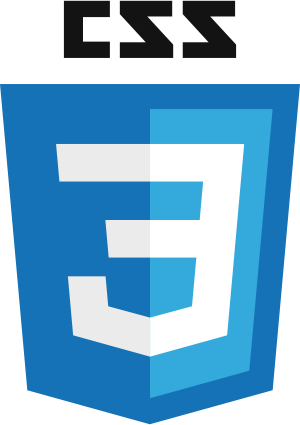
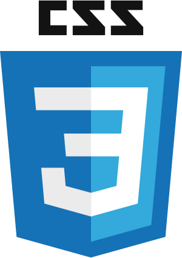

A propos
Je m'appelle Léo Coste, j'ai aujourd'hui 19 ans et j'ai grandit en ardèche. Cette information peut sembler inutile mais elle est pour moi essentielle car c'est ce qui a grandement contribué a ma grande curiosité et à mon envie d'apprendre et de découvrir toujours plus. J'aime beaucoup la nature, les randonées en montagnes et j'aime par dessus tout voyager et découvrir de nouveaux paysages. Dans le sens de la découverte également, j'aime toucher à tout, essayer plein d'arts différents, exprimer mes envies et mes pensées par toutes les manières possibles. Depuis que je suis tout petit, j'adore écouter toutes sortes de musiques, à tel point qu'aujourd'hui, je ne pourrais plus faire sans. Je souhaitais parler de toutes ces pations car je tiens à ce que mon portfolio représente un reflet de ma personnalité le plus fidèle possible. Mais si vous êtes la, c'est pour entendre parler d'informatique ! alors parlons informatique et IT !
Aprés avoir obtenu mon bac spécialités mathématiques physique avec une mention bien en 2021 au lycée Emile Loubet de Valence, j'ai décidé de m'orienter vers le BUT informatique de l'IUT Lyon 1 Site la Doua. Ce choix s'est fait naturellement en mélangeant ma passion pour l'informatique, les nouvelles technologies et la programation. C'est alors que je commence ma formation en séptembre 2021. La fin de la premiere année nous a permis de nous spécialiser en nous proposants plusieurs parcours différents. Mon choix s'est porté sur le parcours AGED ( Administration, gestion et exploitation des données) car j'ai trouvé un réel intéret dans la gestion des données, que ce soit au niveau BIG DATA, comme au niveau décisionnel. A la fin de mon BUT, j'ai pour projet de continuer soit en master, soit en école d'ingénieur de sort à avoir une bonne qualification et de bonnes conaissances.
Télécharger mon CV
 
